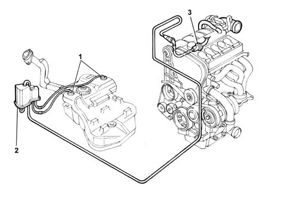

Specifications
- Path
- Descriptions > 10 ENGINE > 1080 EMISSION CONTROL SYSTEM > 1080E EVAPORATION CONTROL SYSTEM > Specifications
- Kind
- system description
- Applies to
- engines: 2.4 20V; all production periods
- Interactive page
- https://sloeber94.github.io/elrnDB-lThss/en/#/610075
Applies to: engines: 2.4 20V; all production periods
FUNCTION
Vapours from the fuel tank are directed through two float valves (1) to separator (2).
Vapours condense in the separator and fall into the tank.
Uncondensed vapours are directed to canister (4) through multifunction valve (3) and a special pipe. They are then absorbed and stored in the activated carbon inside the canister.
The vapours flow to the intake manifold through solenoid (5) controlled by the injection-ignition control unit.

- 1 - Float valves.
- 2 - Fuel vapour separator.
- 3 - multifunction valve.
- 4 - Fuel vapour filter (canister).
- 5 - Fuel vapour solenoid.